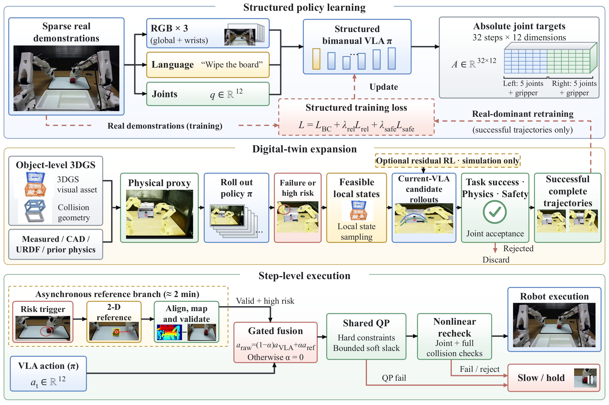
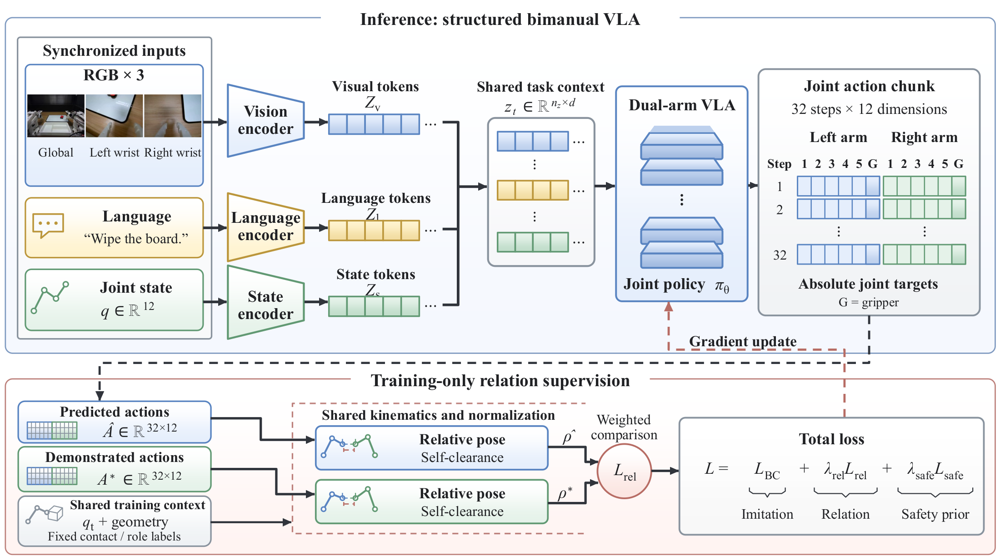
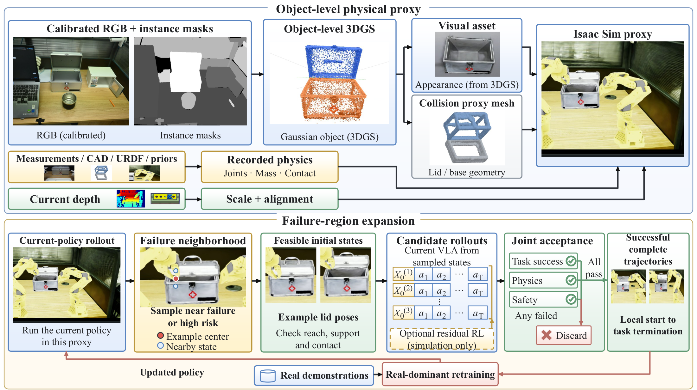
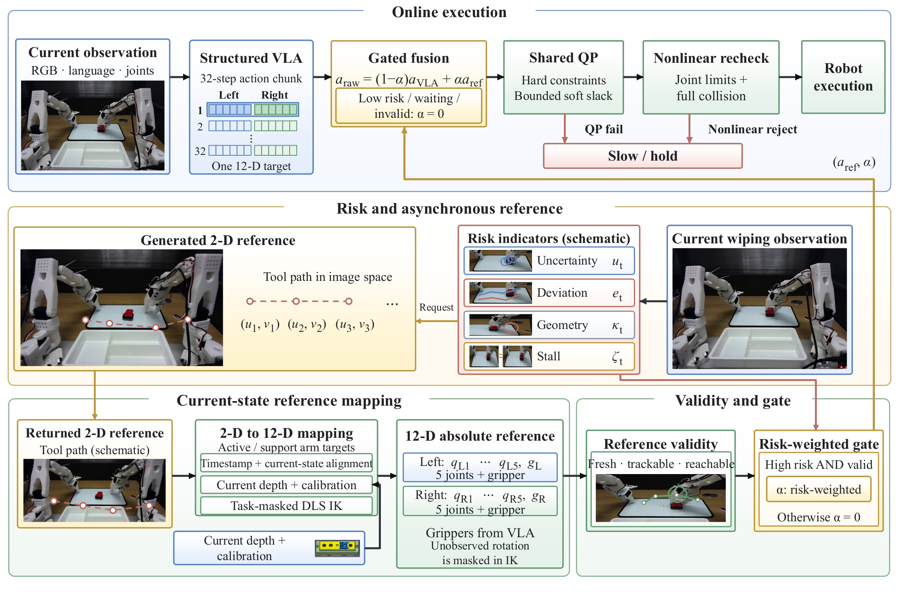
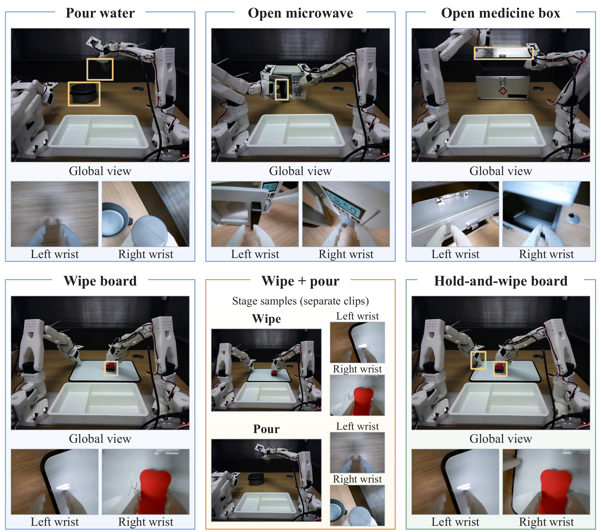

Abstract
Bimanual manipulation requires coordinated arm motion and object contact, but costly demonstrations cover only limited interaction states. We therefore propose MFL (More from Less), combining failure-region expansion in digital twins with deployment-time trajectory compensation for sparse-demonstration learning. A structured vision–language–action (VLA) policy first learns joint bimanual actions from real demonstrations using shared task context and training-time geometric supervision. To extend interaction experience, MFL decouples the background and manipulable objects into independent 3D Gaussian Splatting (3DGS) submodels and combines them with separate collision geometry and external physical parameters. Policy rollouts in this digital twin locate failures, around which feasible initial states are sampled for candidate generation. Complete trajectories that finish the task and pass physics and safety checks enter real-dominant retraining. The updated policy then identifies subsequent expansion regions. At deployment, 2D target trajectories extracted from asynchronously generated videos are aligned with the current state and mapped to actions. Valid references are fused with policy outputs only at high risk. Both base and fused actions pass through a shared quadratic-programming filter and nonlinear recheck. Across six real-robot task categories, the full system achieves a four-stage macro-average success rate of 89.00%, exceeding structured VLA by 13.17 percentage points. In a separate step-recovery evaluation, the complete compensation configuration achieves 67.78% recovery.
Method Overview
Sparse real demonstrations anchor policy learning. Accepted virtual trajectories extend training coverage, while valid references support local recovery at deployment.

Structured Bimanual Policy
The policy combines synchronized RGB from the head and both wrists with the instruction and joint state. It predicts 32 steps of absolute targets for both arms together. Each arm contributes five joint positions and one gripper value per step. During training, the predicted and demonstrated actions pass through the same kinematics and normalization.

Failure-Guided Digital-Twin Expansion
MFL reconstructs the background and movable objects as independent 3DGS assets from the real scene. Separate collision geometry and physical parameters from measurements, CAD/URDF or priors support interaction in Isaac Sim. Failed or high-risk rollout states identify where to sample feasible starting configurations. Only complete, successful rollouts that pass task, physics and safety checks join real-dominant retraining. The updated policy selects the next regions.

Step-Level Trajectory Compensation
Kling AI 3.0 generates a video asynchronously (about two minutes per request). The base policy continues to execute while the video is pending. When it returns, MFL tracks the target in the generated frames and aligns its 2D path to the current state and task stage. Head-camera depth, calibration and task-masked damped least-squares inverse kinematics map observable motion into targets for the ten arm joints. Both grippers inherit their policy commands.

Experiments
Six Bimanual Task Categories
Pouring, opening a microwave, opening a medicine box, wiping a board, a composite wiping–pouring task, and cooperative wiping in which one arm steadies the board.

Quantitative Results
Reported values from the manuscript. Stage success and step recovery use different evaluation units.
| Method | Approach & grasp | Grasp & transport | Target placement | Simple interaction | Stage macro avg. |
|---|---|---|---|---|---|
| Behavior Cloning (Transformer) | 51.33 ± 3.03 | 47.33 ± 4.02 | 48.44 ± 3.75 | 53.56 ± 4.27 | 50.17 ± 1.45 |
| ACT | 59.11 ± 3.44 | 52.89 ± 2.78 | 54.89 ± 2.48 | 59.33 ± 3.61 | 56.56 ± 1.78 |
| Diffusion Policy | 63.33 ± 3.33 | 57.78 ± 3.00 | 59.56 ± 3.75 | 63.78 ± 3.53 | 61.11 ± 1.88 |
| Track2Act-style Video Imitation | 65.11 ± 2.48 | 58.22 ± 2.13 | 60.22 ± 3.44 | 65.78 ± 2.95 | 62.33 ± 1.38 |
| Single-arm VLA | 65.11 ± 3.53 | 57.56 ± 2.66 | 60.00 ± 1.78 | 64.89 ± 2.48 | 61.89 ± 1.24 |
| Naive Dual-arm VLA | 70.00 ± 3.56 | 66.67 ± 3.09 | 67.56 ± 1.98 | 71.11 ± 2.72 | 68.83 ± 1.47 |
| Structured Dual-arm VLA | 78.45 ± 2.47 | 72.22 ± 2.72 | 73.33 ± 2.18 | 79.33 ± 2.58 | 75.83 ± 0.83 |
| Full Pipeline† | 91.33 ± 2.11 | 86.00 ± 1.87 | 87.56 ± 1.52 | 91.11 ± 2.72 | 89.00 ± 0.72 |
Stage success (%), mean ± sample SD over 15 paired units. Each of five independently trained policies was evaluated with three environment seeds. The last column weights the four stages equally within each unit. † Full Pipeline adds proxy expansion and deployment compensation to Structured Dual-arm VLA.
| Method | Compensation | Step recovery | Task success | Collision | Compensation success |
|---|---|---|---|---|---|
| Base Policy | × | 1.33 ± 2.11 | 72.17 ± 2.65 | 8.50 ± 1.27 | N/A |
| Policy Retry | Repeat base policy | 30.00 ± 3.56 | 75.17 ± 2.40 | 9.83 ± 1.14 | 22.00 ± 3.52 |
| Hand-crafted Waypoint | Manual local waypoints | 42.44 ± 2.95 | 78.50 ± 2.80 | 7.50 ± 1.34 | 36.45 ± 3.21 |
| Diffusion/Video Trajectory Baseline | Generated-video reference | 53.33 ± 2.18 | 80.50 ± 2.15 | 8.67 ± 1.29 | 45.78 ± 3.88 |
| Our Trajectory Compensation | Mapping, fusion, QP, and recheck | 67.78 ± 3.00 | 85.33 ± 2.29 | 5.50 ± 1.04 | 64.22 ± 3.20 |
Mean ± sample SD, %. Recovery/compensation use matched trigger segments; task success/collision use complete evaluation episodes. N/A means compensation is not defined for the base policy.
| Training setting | Expansion strategy | Failure guidance | Success filtering | Simulation success | Real-robot success |
|---|---|---|---|---|---|
| Sparse Demo | None | × | × | 75.47 ± 2.20 | 73.00 ± 3.16 |
| No virtual-twin path | Real-trajectory replay only | × | ✓ | 77.60 ± 2.41 | 74.17 ± 3.49 |
| Isaac Sim Random Aug. | Uniform randomization | × | ✓ | 80.67 ± 2.79 | 75.67 ± 3.47 |
| Uniform Virtual Rollout | Uniform state sampling | × | ✓ | 84.00 ± 2.62 | 78.83 ± 2.81 |
| Video Trajectory Aug. | Generated-reference replay | × | ✓ | 81.73 ± 2.12 | 78.67 ± 1.86 |
| Failure-region Expansion | Failure-region sampling | ✓ | ✓ | 89.20 ± 1.97 | 84.33 ± 2.58 |
| Failure-region + Residual RL | Failure-region sampling and residual exploration | ✓ | ✓ | 90.27 ± 2.37 | 86.00 ± 2.80 |
Complete-task success (%), mean ± sample SD. Both uniform and failure-region rollouts filter for success. Sampling near policy failures yielded 84.33% real-robot success versus 78.83% with uniform sampling. Adding simulation-only residual proposals yielded 86.00%.
| Variant | SV | PP | FE | SF | SC | Simulation success | Real-robot success | Step recovery | Collision |
|---|---|---|---|---|---|---|---|---|---|
| w/o Structured Dual-arm | × | ✓ | ✓ | ✓ | ✓ | 81.47 ± 2.07 | 74.00 ± 3.11 | 56.44 ± 3.44 | 8.17 ± 1.14 |
| w/o Object-level Proxy | ✓ | × | ✓ | ✓ | ✓ | 81.87 ± 1.41 | 74.00 ± 2.46 | 57.56 ± 4.27 | 7.17 ± 1.29 |
| w/o Failure-region Expansion | ✓ | ✓ | × | ✓ | ✓ | 83.73 ± 2.37 | 77.50 ± 1.64 | 58.89 ± 3.92 | 7.33 ± 1.76 |
| w/o Success Filtering | ✓ | ✓ | ✓ | × | ✓ | 84.80 ± 1.47 | 77.83 ± 2.29 | 59.55 ± 4.69 | 9.17 ± 1.22 |
| w/o Trajectory Compensation | ✓ | ✓ | ✓ | ✓ | × | 88.80 ± 2.11 | 78.50 ± 2.07 | 31.78 ± 3.96 | 5.67 ± 1.14 |
| Full Pipeline | ✓ | ✓ | ✓ | ✓ | ✓ | 90.67 ± 1.95 | 86.17 ± 2.29 | 69.56 ± 4.86 | 5.17 ± 1.48 |
Ablation task pool, mean ± sample SD (%). Turning off step compensation lowered step recovery from 69.56% to 31.78%. SV = structured bimanual VLA, PP = object-level physical proxy, FE = failure-region expansion, SF = successful-trajectory filtering, SC = step compensation. ✓ enabled, × removed or replaced.
Evaluation and reproducibility notes
The ablation pool is evaluated separately from the stage and recovery comparisons. The repository provides the saved trajectory examples and documents the available records in the reproducibility notes.
Code & Resources
Visit the GitHub repository, source browser, README, and source manifest. The release includes offline trajectory examples, object reconstruction and physical-proxy utilities, and simulator interfaces.
The public code recomputes the saved offline pouring and wiping trajectories (Appendix Fig. A.4). The training, expansion and control modules are reference implementations. Original policy checkpoints and raw evaluation episodes are unavailable. See the reproducibility notes.
Run the available examples
git clone https://github.com/RoboVLA/More-from-Less.git
cd More-from-Less
python -m pip install -r requirements.txt
python -m unittest discover -s tests -v
python -m morefromless.trajectory.reproduce_appendix
python paper_pipeline/run_morefromless_pipeline.py --dry-run --include-disabled
python scripts/serve.pyBibTeX
@unpublished{anonymous2026morefromless,
title = {More from Less: 3D Gaussian Splatting Digital Twins with Iterative Expansion and Trajectory Compensation for Sparse-Demonstration Bimanual Manipulation},
author = {{Anonymous Authors}},
note = {Research manuscript},
year = {2026}
}